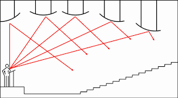
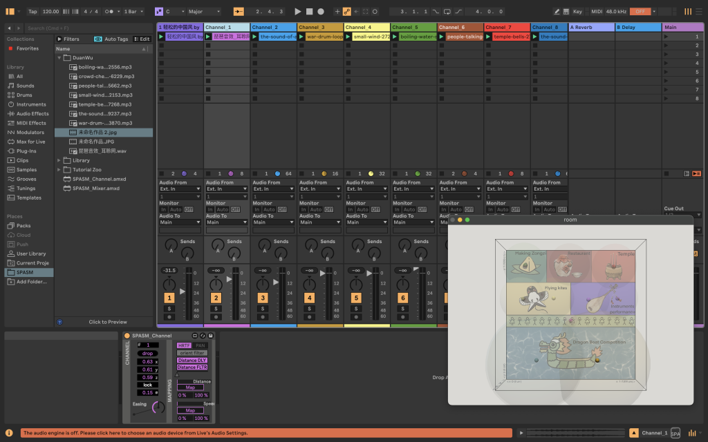

This week’s reading has made me re-understand a dimension that I used to always overlook. Sound is not an additional element, but a part of space, and even the “soul” of space.

e-basel.com. (n.d.). Architectural Acoustics [Online image]. Available at: https://www.e-basel.com/uncategorized/architectural-acoustics/ (Accessed: 2 April 2025)
I particularly like the concept of “acoustic architecture” proposed by Blesser & Salter. In the past, I have always been engaged in design at the visual level, such as how high the walls are, how wide the windows are, and from where the light enters. However, there is a question that I have thought about relatively little: “What does this space sound like?” For example, the sense of space in Winchester Cathedral is actually made complete by its long reverberation and the sounds reflected by the stone walls. When a person walks along the corridor of the cathedral, the sound of their footsteps will echo with a delay, and this kind of reverberation makes you involuntarily slow down your steps and lower your voice. This is the space “teaching you how to behave”.

Chion’s “three modes of listening” have made me realize that I can use different types of sounds strategically. For example, when a user approaches a confessional, I can play a soft-spoken prayer audio track, which is semantic listening. But at the same time, I can also play some “indistinguishable reverberations” so that people only pay attention to the emotion of the sound (reduplicative listening), which will create an atmosphere of “emotional enclosure”. For instance, some ambient sounds can be added. Just like when I created a street scene for the Dragon Boat Festival, in the area where people are flying kites, I not only added the sounds of children playing and laughing, but also included the sound of the wind in the background audio.
Klein, A. (2021). Soundscapes: A perceptual design tool on the rise [Online image]. Available at: https://www.acousticbulletin.com/soundscapes-a-perceptual-design-tool-on-the-rise/ (Accessed: 2 April 2025)
Schafer’s soundscape theory also serves as an important reminder to me, I shouldn’t just simulate human voices or music, but also restore the “naturally existing sound ecology” in the space. For example, in the early morning version of the church, add the flapping sound of pigeons’ wings, the distant tolling of bells, and the sound of the wind blowing. These are the real “auditory memories” of the space. Even more, I can convey the “cascading history” of the space through sound, for instance, when people are standing in the same place, softly play fragments of the voices of medieval priests preaching, and then at another point in time, switch to the reverberation of modern tourists talking, creating an illusion of “history intersecting in your ears”.
In general, this week has made me understand an important transformation, sound is not the “background”, but the “guide”. It guides you on how to perceive the space, immerse in the emotions, and even awaken memories. For AR/VR projects, this means that I need to design the “architecture of sound” just like designing a building. It’s not just about “what music to play”, but about “designing how you hear this world”.
Reading list
- Blesser, B. & Salter, L. (2007). Spaces Speak, Are You Listening?, Chapter 1: Aural Architecture
- Chion, M. (1994). Audio-Vision: Sound on Screen, Chapter 1: The Three Listening Modes
- Schafer, R. M. (1977). The Soundscape, Chapter 4: The Tuning of the World